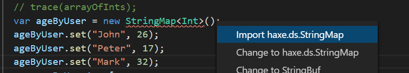

haxe学习-五-List和Map
这一章主要介绍List和Map
haxe中List其实代表链表，像集合、数组、列表的功能都由Array承担
List：链表
LIst创建
1 | var listOfInts = new List<Int>(); |
List的操作基本和Array相同，可以进行元素的增加，删除，查询
与Array新增元素不同的是，List只能在List的表头和表尾增加元素，不能指定索引增加元素
List增加元素
1 | var listOfInts = new List<Int>(); |
List删除元素
删除元素有两种，一种是删除指定元素，一种是删除表头元素
1 | var listOfInts = new List<Int>(); |
List元素访问
能直接访问直接访问的元素只有表头和表尾的元素,并不能方位指定索引处的元素
1 | var listOfInts = new List<Int>(); |
List遍历
依旧可以使用foreach遍历
1 | for (item in listOfInts) { |
其他操作
Filter和Map的操作和Array里的操作基本相同
Filter:过滤
1 | var listOfEvenInts = listOfInts.filter(function (e) return e % 2 == 0); |
Map:映射
1 | var listOfIntsAsStrings = listOfInts.map(function (e) return Std.string(e)); |
List的显示
list的显示也和Array里de一致
1 | // Returns a string of list elements concatenated by separator string |
Map：映射
在haxe中，Map就是一种映射关系，和其他高级编程语言的概念基本一致，由key和value组成
Map的组成类型
| Map | Key type | Specialized map used |
|---|---|---|
Map<String, V> |
String |
haxe.ds.StringMap |
Map<Int, V> |
Int |
haxe.ds.IntMap |
Map<EnumValue, V> |
EnumValue |
haxe.ds.EnumValueMap |
Map<MyType, V> |
class or structure | haxe.ds.ObjectMap |
Map<Dynamic, V> |
dynamic type | compile-time error |
Map的创建和赋值
赋值的形式有两种,用但是需要导包

1 | var ageByUser = new Map<String, Int>(); |
下面的上面的是等价的
1 | var ageByUser = new StringMap<Int>(); |
当然我们也有另外一种更直观的方式的创建和初始Map，这种创建形式不需要导包
就是用这种类似箭头的方式[key1 => value1, key2 => value2]：
1 | var ageByUser = [ |
Map的访问
和其他大多数的Map的value访问一直,可以通过get(key)访问，在haxe中提供了一种类似数组下标的访问方式
1 | var ageByUser = [ |
如果key不存在就会返回null， 我们用map.exists()方法来判断key是否存在
1 | var ageByUser = [ |
Map删除元素
使用map.remove()删除元素
1 | var ageByUser = [ |
Map的遍历
map遍历的形式有两种
第一种是for (value in map),for循环遍历value
1 | var ageByUser = [ |
第二种是 for (key in map.keys())，遍历key
1 | var ageByUser = [ |
当然也可以结合起来遍历key和value
1 | var ageByUser = [ |
可能是考虑到这么写比较复杂，从haxe4.0开始还给出这种遍历key，value的方式，for (key => value in map)，用这种箭头的形式
1 | var ageByUser = [ |
Map的清空
haxe没有直接的类似clear的方式，只能遍历删除元素达到清空map的效果
1 | var ageByUser = [ |